Netvizz
Netvizz 是一個提供下載 Facebook 資料的 app 。目前可以抓的包括 粉絲專頁(page)、社團(group) 等。
安裝、接受 Netvizz 的使用授權
請到這網址： https://apps.facebook.com/netvizz/ 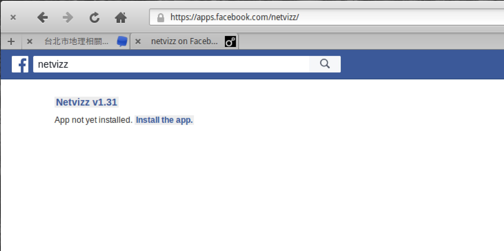
登錄個人 Facebook 後，會到這頁面，選擇繼續
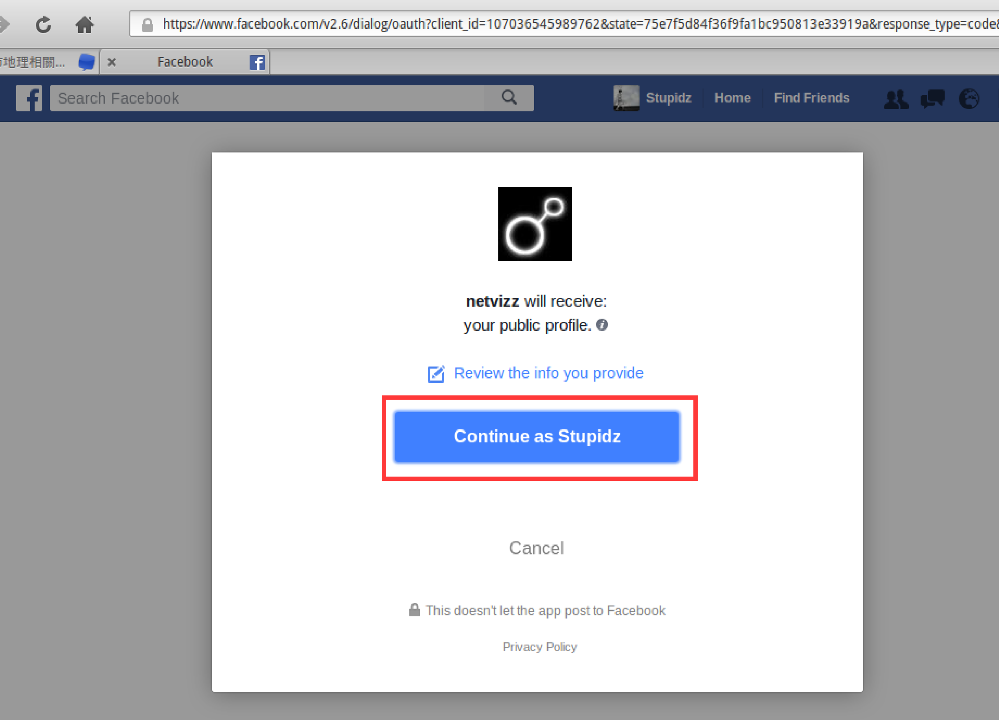
表示已將這 app 加到個人 Facebook 的使用 app 列表中， 點 Go to Netvizz 進入下載頁面。
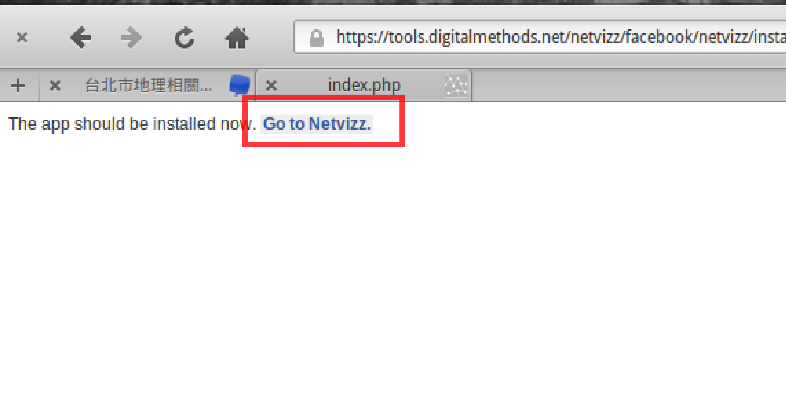
上述步驟是安裝、認證這 app 的過程，此後在同一個個人 FB 帳號下，將不會再需要這步驟。
下載粉絲專頁資料
再次進入 https://apps.facebook.com/netvizz/，會看見這頁面。點選 page data 進入粉絲專頁資料下載頁面 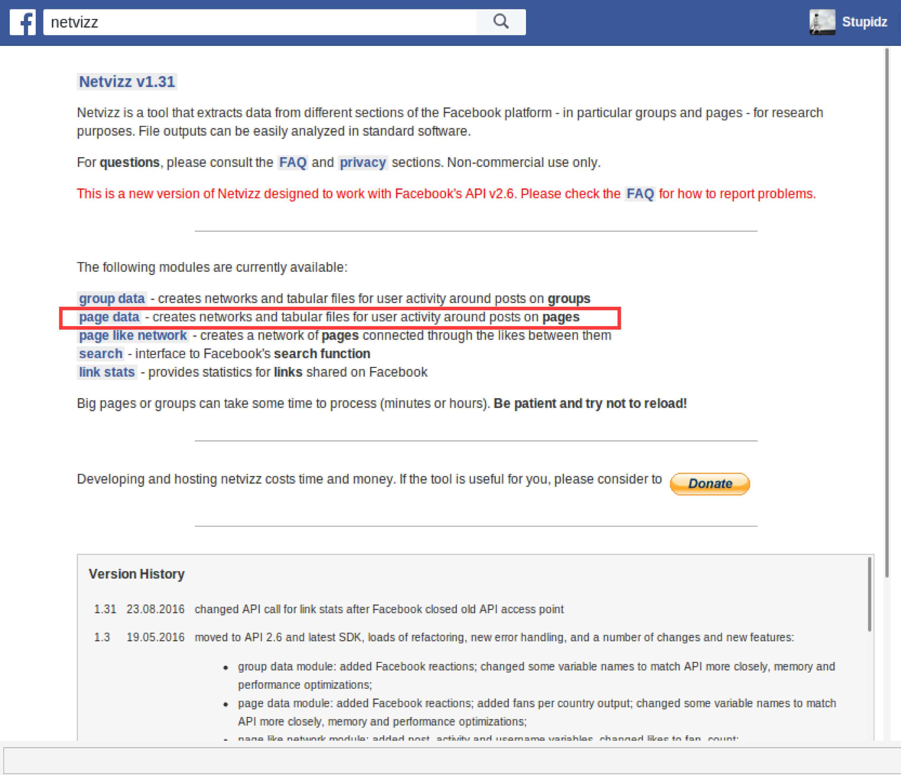
這是設定要抓哪個粉絲專頁的設定頁面
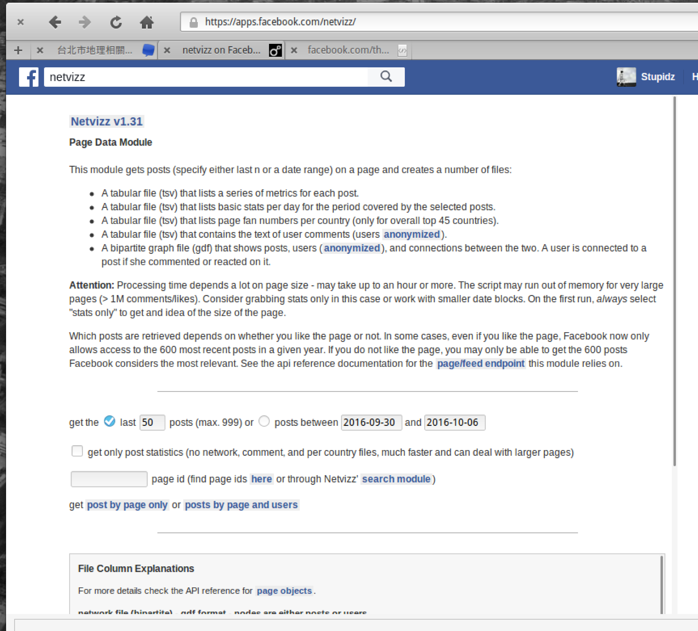
以下介紹用這個粉專作爲抓的對象: CityLab
需要先找出這粉專頁面的 ID，需要到這網頁： lookup id ， 從上述 netvizz-->page 之後，有一個選項「find page id here」也可以進入這搜尋ID的網站。
貼上 FB 複製下來的ID
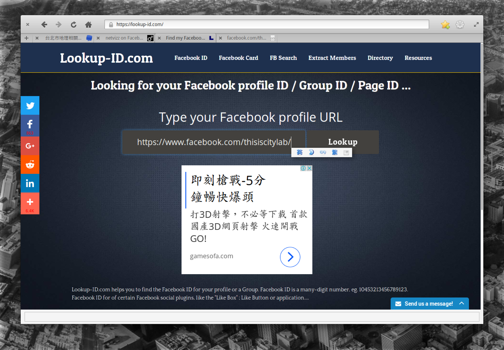
找到 ID，請複製這串數字
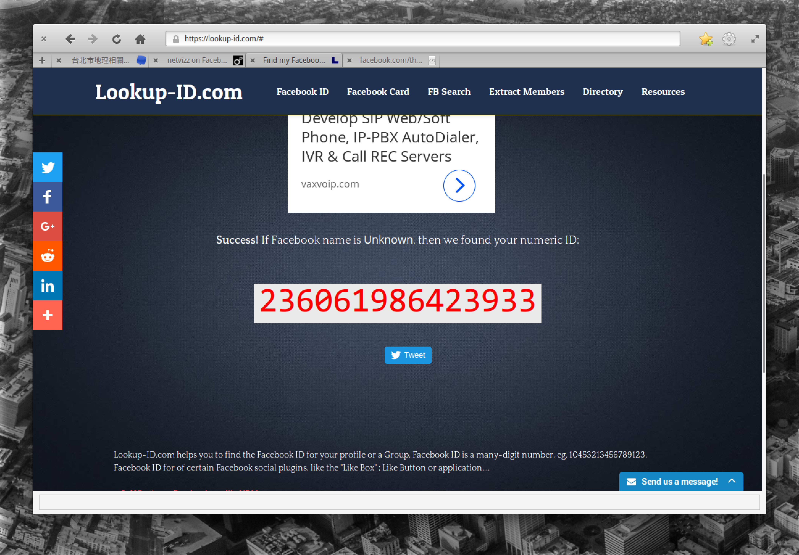
將那串數字ID貼在這，再選左邊的，右邊的也可以試試，但可能會跑的比較久。
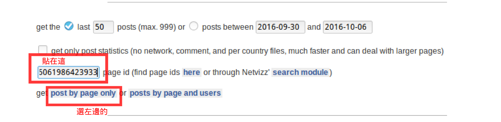
上面還有一些選項，包括要抓最近 50筆資料(這範例用的，也是預設值)，或者要抓某年某月某日至哪一天的 po 文，等。
開始抓資料
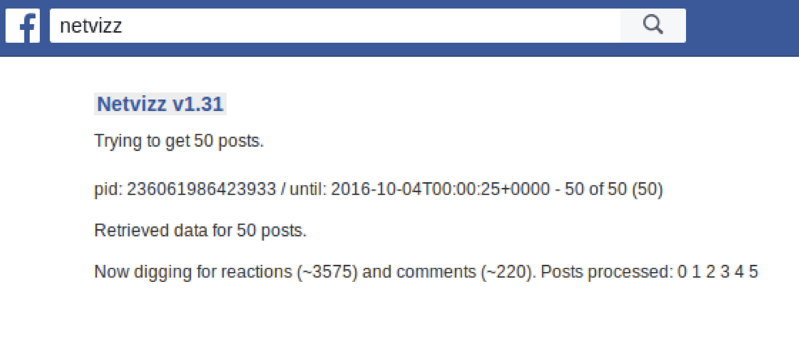
準備好資料，請按下面的 zip archive 開始下載資料(壓縮檔)
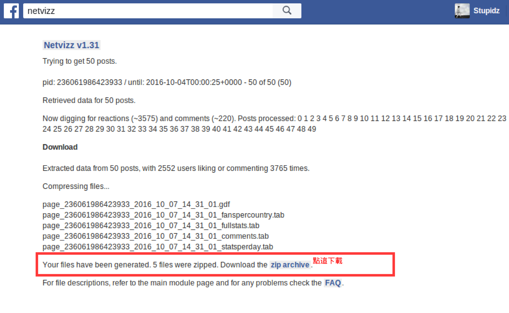
下載好的檔案，解壓縮後會有這 5個檔案，這範例將會用到第一個 .gdf 檔。 .gdf 檔案是一種網路資料儲存格式，格式可參考這。
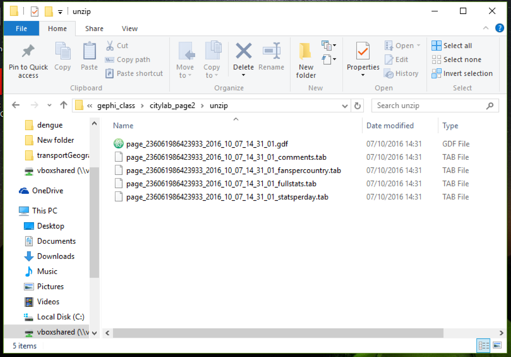
資料基本上準備完成